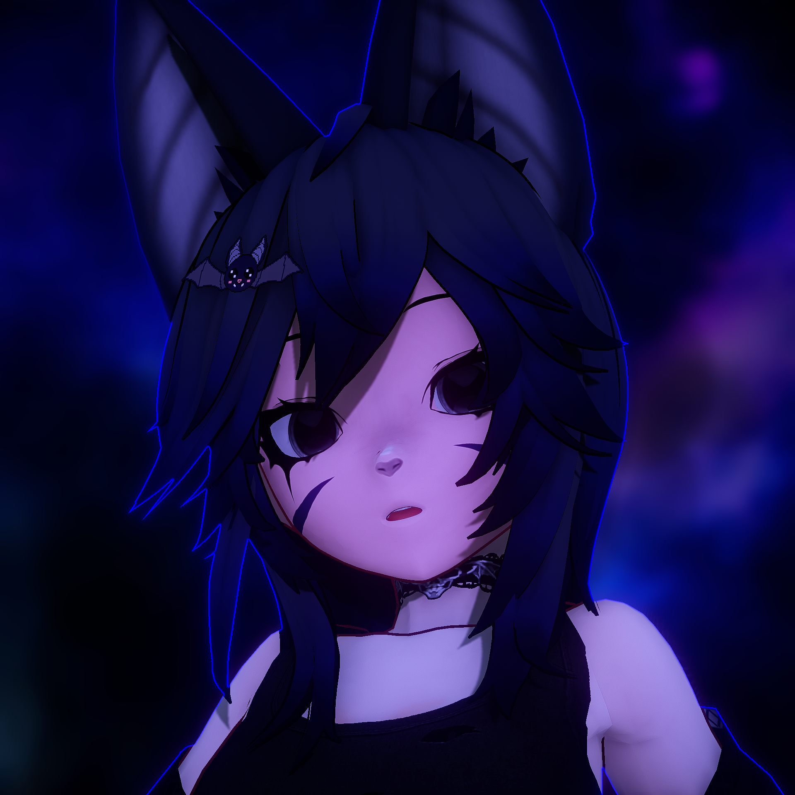
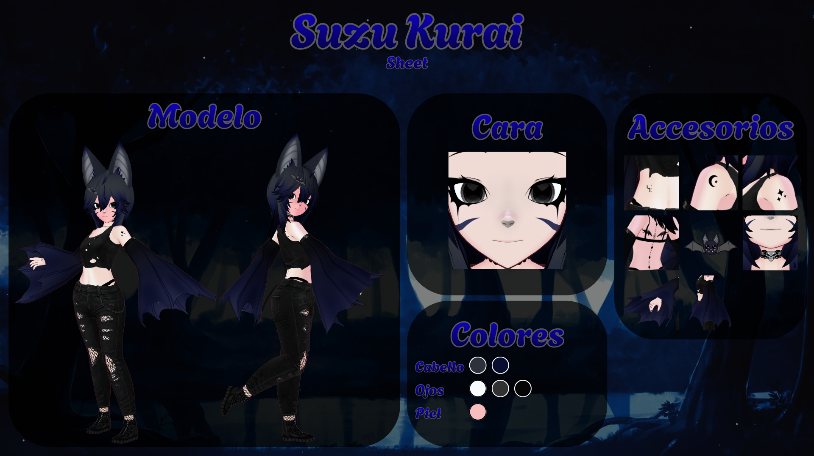
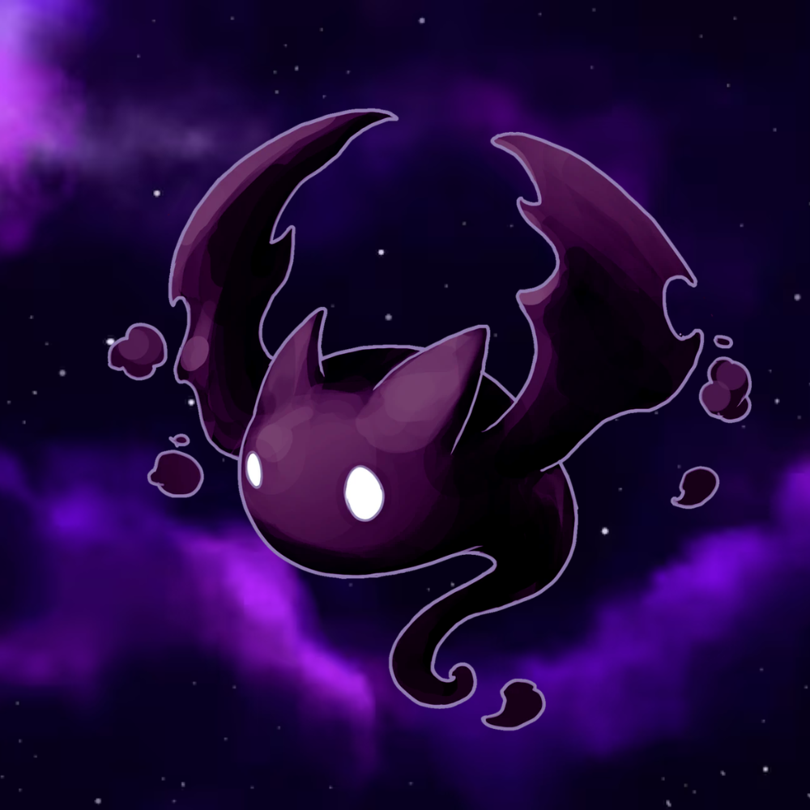

Suzu Kurai

Suzu nace a partir de Chirix, Diosa y reina del Reino Oscuro, quien le dio vida a Suzu Kurai para que pudiera caminar entre los humanos. Tras descender al reino mortal, Suzu fundó su propia cafetería con un propósito: ofrecer un santuario donde las personas puedan conversar y descansar tras el agotamiento de la rutina diaria y así poder aprender más sobre esa curiosa raza.
En sus ratos libres, Suzu se sumerge en el mundo de los videojuegos, no solo jugándolos, sino creando los suyos propios. Suele pasar noches enteras en su cafetería, aprovechando el aroma del café para combatir su naturaleza nocturna y mantenerse despierto durante el día (aunque no siempre es fácil ewe).
Es un entusiasta de los sabores extremos —dulces, picantes y amargos— y un amante de la buena música. Como criatura profundamente social, Suzu no soporta la soledad; siempre buscará la compañía de otros para compartir charlas bajo la luz de la luna o en la calidez de los espacios oscuros que tanto adora.
— Suzu Kurai 🖤
🖼️ FANARTS
Fragmentos visuales dejados por los artistas, gracias por vuestro apoyo 🖤
¡No olvides mandar tus dibujos por nuestro discord!


sdadd